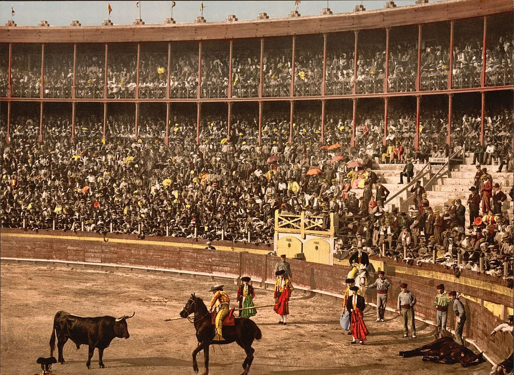

chapter13.2--handout
Background Information
History of bullfighting in Spain 西班牙斗牛史
西班牙斗牛最早可以追溯到西班牙古代宗教活动（杀牛供神祭品）（Bullfighting traces its roots to prehistoric bull worship and sacrifice）, 比如在阿尔达米拉岩洞中发现的新石器时代的岩壁画里，还有记录着人与牛搏斗的描绘。
在中世纪，斗牛仍然是一项贵族运动，因为饲养和训练马匹的都需要一定的花费（In medieval Spain bullfighting was considered a noble sport and reserved to the rich, who could afford to supply and train their animals）. 最早的斗牛形式：在一个封闭的场子里，斗牛士骑在马背上拿着长矛单独和公牛搏斗（The bull was released into a closed arena where a single fighter on horseback was armed with a lance）.
但到了18世纪中期，波旁王朝统治时期，第一位国王菲利佩五世对于这项运动深恶痛绝，认为这种容易对皇室成员造成伤害的残酷运动应该被禁止。此后，这一传统贵族专利就从皇宫传到了民间。

现在从每年的3月19日——圣约瑟夫日开始，到10月12日西班牙国庆节这长达7个月的时期，成为斗牛季。其中3月时在瓦伦西亚著名的火祭节（Fallas festival）以及6月时在格拉纳达的圣体节（Corpus Christi）都将进行一系列隆重的斗牛赛。另外，普及到民众中的就是一年一度的奔牛节（即“圣福明节”，Festival of San Fermin），也就是我们的主角们正要去参加的这场狂欢节哦~
在斗牛的选用上，西班牙斗牛（Spanish Matador）选用的公牛是一种血统纯正的野性动物，一般是生性暴烈的北非公牛，它们由特殊的驯养场负责牛种培育，经过四到五年即可用于比赛。但公牛好斗的本性不是经人训练出来的，而是其天生的。
另外在西班牙，斗牛士的地位也高出一般的社会名流和演艺界人士。他们被认为是“高雅”和“勇敢”的象征。而且斗牛其实并非男子的专利，在20世纪30年代之前一直都有女性参与这项运动，只是后来女斗牛士遭到了禁止。但近十年来，又有不少女性陆续投身到这项勇敢者的挑战中。

Vocabulary
inscription
n. 碑文；（作者）题词；献词（words written in the front of a book or cut in stone or metal）
原文：They often had the most flattering inscriptions.
这些照片上往往有过分谄媚的题词。
💧inscription 在这里是指来Montoya的旅馆入住的斗牛士们在照片上留下的祝语；另外inscription还可以指碑文，或者是奖章上的题字，比如：The medal bears the inscription "For distinguished service."
那块奖章上刻有“功勋卓著”的字样。
simulate
vt. 模拟；模仿（to be made to look like sth else）
假装，冒充（to pretend that you have a particular feeling）
原文：He might simulate it or confuse it with excitement, but he could not really have it.
他可能假装热爱，或者把激动当作热爱，但是他不可能真正具备这份热爱。
💧这里的simulate it就是指pretend to have aficion (enthusiasm) “佯装热情”，simulate相当于feign的用法，比如：He found it impossible to simulate/feign grief.
他无法装出悲伤的样子。
Crush Your Problems

When they saw that I had aficion, / and there was no password, no set questions that could bring it out, / rather it was a sort of oral spiritual examination / with the questions always a little on the defensive and never apparent, / there was this same embarrassed putting the hand on the shoulder, or a "Buen hombre."
等他们发现我具备这份热爱——这不是什么暗语，也不是用一套特定的提问所能探测出来的，毋宁说是用一些小心翼翼而吞吞吐吐的问题在口头上进行心灵的测验而发现的——就同样会扭捏地把手按在我的肩上，或者说一声“Buen hombre”（“好伙子”）。
💧表达精讲
①bring sth out 在这里指“使显露出来”（reveal or expose sth）, 比如： His book brought out some new facts about the war.（他的书为这场战争提供了新的事实论据。）
②on the defensive 本义是“处于戒备状态的，存有戒心的”（behaving in a way that shows that you think that someone is criticizing you even if they are not）, 注意defensive在这里是名词。
这句话说的是当斗牛迷在确认同伴的时候，并没有固定寻常的提问或者约定好的暗号，而是通过口头上的一些试探，往往还是小心翼翼而且闪烁其词的。在确认之后，他们的表现一般是扭捏地把手放在对方肩上，或者说一句“Buen hombre”. 当他们确认Jake也是斗牛迷后就是这么对他做的（同时this same要结合上文来理解，Montoya对Jake也做了这件事情：He put his hand on my shoulder again embarassedly）.


He could forgive attacks of nerves, panic, bad unexplainable actions, all sorts of lapses.
他可以宽恕突然发作的歇斯底里，惊慌失措，恶劣的莫名其妙的动作，各种各样的失礼。
💧表达精讲
①attack 在这里不是指“攻击”哦~ 而是“（疾病急性）发作”（a sudden short period of suffering from an illness, especially an illness that you have often），比如heart attack “心脏病发作”；an attack of flu “患上流感”等；
②nerves 作为复数形式可以指“神经紧张”（feelings of anxiety or tension）, 比如：I just played badly. It wasn't nerves.（我就是演得不好，不是紧张。）
③lapse 表示“（一时的）行为有失检点”（a moment or instance of bad behaviour by someone who usually behaves well）, 比如：On Friday he showed neither decency nor dignity. It was an uncommon lapse.（星期五他既不庄重也不体面。这可是他少有的失礼。）
At once he forgave me all my friends.
因此他马上原谅我，不去追究我那些朋友的底细。
💧表达精讲
forgave me all my friends 可以理解为 forgave me for being among the circle of my friends. 大概意思是Montoya并不是很喜欢Jake的朋友们，比如可能因为他们对斗牛没有真正的热情，只是来看个热闹，但因为Jake是斗牛迷，所以他对Jake的圈子也持宽容态度。

Without his ever saying anything / they were simply a little something shameful between us, / like the spilling open of the horses in bull-fighting.
他一字不提他们的事儿，他们不过是我们彼此之间羞于提起的事儿，就像斗牛场上马儿被牛角挑得肠子都流出来这事那样。
💧句式拆解
Without his ever saying anything 可以看作现在分词结构作伴随状语哦~
他 也就是Montoya，而“他们”则是指Jake的朋友们。因为Jake和Montoya都是斗牛迷，而Jake的朋友们并没有对斗牛真正的热情，所以他们便把这些人都排除在外，看成是“异类”（借用昨天内容出现的一个词：outsiders）. 这里作者用了一个不太令人舒适的比喻来形容Jake和Montoya不屑于提起Jake的朋友：就像他们会回避去提起斗牛场上被牛角剖开肚子的马匹，仿佛是一桩丑事不便外扬似的。

"Have you got tickets?"
"Yes. I got them for all the unloadings."
“你拿到票啦？”
“拿到了。看牛出笼的所有票都拿到了。”
💧表达精讲
unload 本义是指“卸货”（to discharge a cargo or some other burden）, 比如：The driver unloaded some boxes from the back of the truck.（司机从卡车后部卸下了一些箱子。）
这里的unloading是指把牛从牛栏里放出来（to release the oxen from behind the fences）.

"They let the bulls out of the cages one at a time, and they have steers in the corral to receive them and keep them from fighting, and the bulls tear in at the steers and the steers run around like old maids trying to quiet them down."
“他们一次从笼里放出一头公牛，在牛栏里放了些犍牛来迎接它，不让他们相互顶撞，公牛就朝犍牛冲去，犍牛四处奔跑，像老保姆那样想叫公牛安静下来。”
💧知识拓展
steer 指“阉割过的小公牛”（a young male cow whose sex organs have been removed）, 这种牛被称为“犍牛”，一般性情温顺，没有发情期，没有交配和求偶行为，既没有对人的伤害，也不会因为争夺配偶与其他公牛产生争斗。

"Tell them about the time your horse bolted down Piccadilly."
“跟大家说说那次你的马在皮卡迪利大街脱缰狂奔的事。”
💧表达精讲
①bolt 在这里指“奔，窜”（to suddenly run somewhere very quickly, especially in order to escape or because you are frightened）, 也可以用来形容人，比如：Kevin had bolted through the open window.（凯文从开着的窗子窜了出去。）
②down Piccadilly 也s就是along Piccadilly “沿着皮卡迪利大街”。
"I'll not. That story reflects great discredit on me."
“我才不讲这一段呢。这是让我丢脸的事儿。”
💧表达精讲
reflect discredit on sb 可以理解为bring discredit on sb “败坏某人的名誉，让某人丢脸”（to cause sb to lose other people's respect or trust）. 比如：The behaviour of fans has brought discredit on English football.（球迷的行为败坏了英格兰足球的名誉。）
Content Analysis
今天的内容主要是关于Jake和酒店老板Montoya之间的关于斗牛迷的对话，以及一行人重聚之后的交谈。首先是关于Jake的身份，他是一个十足的斗牛迷，文中有不少细节都在反复强调这一点。这也解释了我们昨天分析中提到的，Jake和Montoya仿佛有一层秘密关系，并且Jake的朋友们都被排除在外了——
💧Clue 1:Jake is a bullfighting fanatic.
Evidence 1: "Yes?" Montoya politely disbelieved. "But he's not aficionado like you."
He put his hand on my shoulder again embarrassedly.
“是吗？”蒙托亚客气地表示怀疑。“但是他不像你那么着迷。”
他又扭捏地把手搭在我的肩上。
Evidence 2:We often talked about bulls and bull-fighters. I had stopped at the Montoya for several years.
我们经常谈论公牛和斗牛士。我一连几年都到蒙托亚旅馆小住。
这里透露了Jake每年都到潘普洛纳来看奔牛节，所以Montoya对他格外有好感。并且还把他介绍给自己同为斗牛迷的朋友们（Montoya introduced me to some of them）. 他们和Jake打招呼的方式也和Montoya一样，带有扭捏和不自然，显得很隐秘（...there was this same embarrassed putting the hand on the shoulder, or a "Buen hombre"）.
那么Jake对斗牛的热爱从何而来，以及这又对他的生活产生了什么影响呢？有一个细节：在小说开篇的时候，Cohn向Jake抱怨生活的无趣平淡，Jake则对他说了一句："Nobody ever lives their life all the way up except bullfighters."（“除了斗牛士，没有人的人生是一路高歌猛进的。”）这样看来，这句话就说得非常意味深长了。具体的含义我们会在之后的情节发展里再进行剖析~
今天还有一处细节是关于Cohn的，他似乎对大家的团聚表现得非常悻悻然——
💧Clue 2: Cohn doesn't appear to be excited about getting together.
Evidence 1:Brett was happy. Mike had a way of getting an intensity of feeling into shaking hands. Robert Cohn shook hands because we were back.
勃莱特很高兴。迈克有种本领，能在握手中灌注强烈的感情。罗伯特·科恩同我们握手是因为我们赶回来了。
Cohn的冷淡表现似乎非常符合他一直以来的人物设定，但通过握手这个动作，也刻画出了他和这群人格格不入的一面——他缺乏激情以及和人交往时的亲近，这一点在他之后的很多行为表现上都会得到印证。
Today's Bonus
💧英语里表示“…狂/迷”的尾缀
今天的内容里出现了一个词aficionado, 在西班牙语里它表示“狂热爱好者，…迷”。这个词语也在19世纪进入了英语当中，所以平时也是可以直接使用的哦~ 比如：I happen to be an aficionado of the opera, and I love art museums.（碰巧我是个歌剧迷，而且喜欢艺术馆。）
其实除了aficionado和我们熟悉的fan/fanatic可以直接用来表示“…迷，狂”，在英语里还有各种可以放在名词后面修饰的尾缀来表达这个意思哦~
1. -aholic/-oholic
-aholic/-oholic源自“alcoholic”（酒鬼，嗜酒者），表示“沉湎于…的人；对…有嗜好的人”。
比如：a computerholic（计算机迷）、a cardaholic（牌迷）、a movieholic（电影迷）、a workaholic（工作狂）、a shopaholic（购物狂）、a surgiholic（整容狂）、a bookaholic（爱书狂）、a colaholic（嗜饮可乐的人）、a chocoholic（嗜吃巧克力的人）等等。
2. -goer
-goer作为组合形式与其他名词复合使用，表示“常去…的人”，间接表达“…迷”之意。
比如：a cinema/film-goer（电影迷）、a theatre/opera-goer（戏迷/歌剧迷）、a concert-goer（音乐会迷）等。
当然有的情况下-goer就只是单纯表示“参加……活动的人”哦~
3. -mania/-maniac
mania/maniac是心理学术语，原指“癫狂/躁狂症者”。现常用来构成复合名词，表示“…迷”，“…狂”，“…癖”。
比如：a religious/football/fishing/disco/china maniac（宗教迷/足球迷/钓鱼迷/蹦迪迷/瓷器收藏迷）、kleptomania/kleptomaniac（偷窃狂，盗窃癖）、bibliomania/bibliomaniac（藏书癖，集书狂）、xenomania（外国迷，媚外狂）等。
4. -nik
前苏联1957年发射了人类第一颗人造地球卫星“sputnik”。“sputnik”在俄语中是“旅伴”的意思。从中提取出来的“-nik”除了表示“以…为特征的人”，“参与/介入…的人”等新义之外，还表示“热衷于…的人”。
比如：a computer-nik（电脑迷）、a cinenik/filmnik（电影迷）、a folknik（民歌迷）、a jazznik（爵士迷）、a jobnik（工作迷）、a citynik（都市迷）、a peacenik（和平爱好者）等。